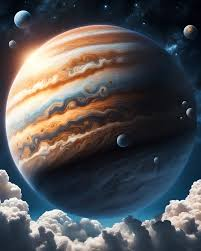
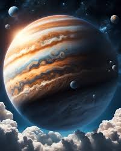

Júpiter es el quinto planeta del Sistema Solar y el más grande de todos, con un diámetro de aproximadamente 139,820 kilómetros, que es más de 11 veces el de la Tierra. Este gigante gaseoso es conocido por su enorme tamaño, sus características bandas de colores y su icónica Gran Mancha Roja, una gigantesca tormenta que ha estado activa durante al menos 300 años. La composición de Júpiter está dominada por hidrógeno y helio, similar a la del Sol, con trazas de otros elementos como metano, amoníaco y agua, no tiene una superficie sólida como los planetas terrestres, pero se cree que en su núcleo podría haber una mezcla de roca y metal bajo una intensa presión y temperatura.
Júpiter tiene una rápida rotación, completando un día en solo unas 10 horas, lo que lo convierte en el planeta con el día más corto del Sistema Solar, su órbita alrededor del Sol dura aproximadamente 12 años terrestres, la rápida rotación y su composición gaseosa generan poderosos vientos y tormentas en su atmósfera, que forman las características bandas de nubes de colores, el sistema de Júpiter incluye un impresionante conjunto de anillos tenues y más de 90 lunas confirmadas, siendo las más famosas las cuatro lunas galileanas: Ío, Europa, Ganímedes y Calisto, estas lunas son mundos fascinantes por derecho propio: Ío es el cuerpo más volcánicamente activo del Sistema Solar, Europa podría tener un océano de agua líquida bajo su superficie helada, Ganímedes es la luna más grande y tiene su propio campo magnético, y Calisto muestra una superficie llena de cráteres.
El campo magnético de Júpiter es el más poderoso del Sistema Solar y genera radiaciones intensas a su alrededor, misiones como Voyager, Galileo y Juno han proporcionado datos cruciales sobre este gigante gaseoso, ayudando a entender mejor su composición, atmósfera y lunas, Júpiter sigue siendo un objeto de estudio clave para comprender la formación y evolución del Sistema Solar.
- Resumen
- Tamaño: El planeta más grande (diámetro de 139,820 km).
- Distancia del Sol: 778.5 millones de km.
- Día: 10 horas (el día más corto de todos los planetas).
- Año: 11.86 años terrestres.
- Atmósfera: Compuesta principalmente de hidrógeno y helio.
- Características únicas: Tiene la Gran Mancha Roja (tormenta gigante) y más de 90 lunas, incluidas Ío, Europa, Ganímedes y Calisto.
- Otros Datos
- Campo magnético: Tiene el campo magnético más fuerte de todos los planetas, 20,000 veces más potente que el de la Tierra.
- Auroras: Genera auroras en sus polos debido a su intensa actividad magnética.
- Anillos: Aunque son débiles, Júpiter también tiene un sistema de anillos.